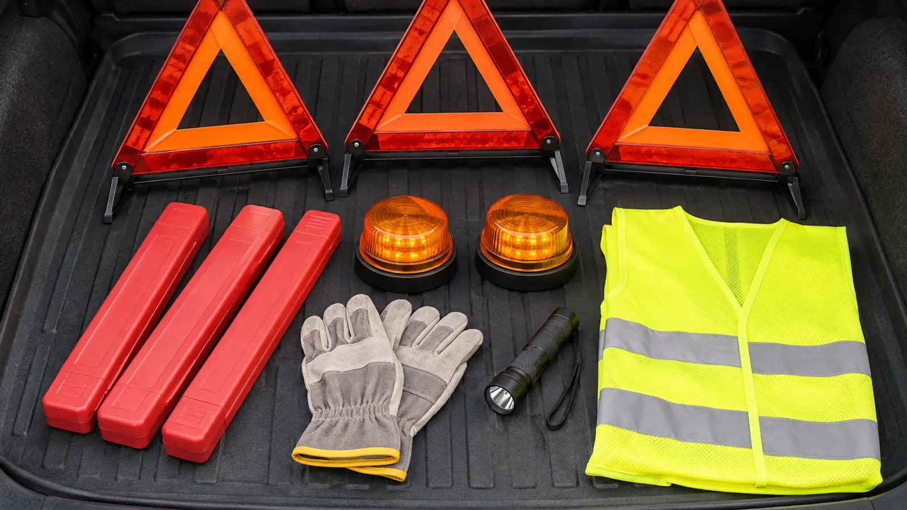

Reflective triangles
Best fit: no battery, compact storage, visible in headlights. Tradeoff: must be unfolded, kept upright and placed without exposing the adult to traffic.
CAR SYSTEM · BREAKDOWN VISIBILITY · DATA-LED
The first move is not walking into traffic with a triangle. Get the vehicle as far from traffic as possible, use hazards, call for help, control the kids, then decide whether any outside deployment is safe.

Commercial disclosure: this guide includes three Amazon Associate category links added by Mr Adventure Dad’s approved affiliate system. The site may earn from qualifying purchases at no added cost to you. No pictured or linked product was hands-on tested, and links do not prove legality, certification, brightness, visibility distance, weather resistance, battery life, fire safety, price, stock, rating or warranty.
A family visibility kit is there to make a stopped vehicle easier to notice after the adult has dealt with the actual emergency. Reflective triangles need approaching headlights and safe placement. Amber LED beacons need charged batteries, secure mounting and legal use. Flares produce bright light but add fire, burn, smoke and storage hazards. For most family cars, three stable reflective triangles plus two amber battery beacons and a high-visibility vest is the cleaner starting point. Flares are not the default.
NHTSA’s winter driving checklist recommends a broom, ice scraper, abrasive material, jumper cables, flashlight, warning devices, first-aid kit, blankets, food, water and a phone/charger. Its Move Over guidance tells approaching drivers to change lanes away from stopped vehicles with flashing lights or slow when a lane change is unsafe. That law protects workers and motorists; it is not a force field.
The full family roadside-breakdown plan covers roles and calls. This page covers only the visibility gear choice.
Skip mystery bundles that hide device specifications, suction-cup emergency lights that block the driver’s view, flashing red/blue lights marketed for public-road use, cheap triangles that collapse in a light breeze, and fire flares when you do not know the applicable rules, storage life and disposal route. Do not count a phone flashlight as a vehicle warning system.
Compare category choices below; these are searches, not rankings. A recognized brand name is not a substitute for reading the exact product documentation and current recall information.
Do not treat a burning flare as a brighter triangle. Fuel leaks, dry grass, brush, clothing, pets and curious children turn heat into a second emergency. State and local rules, tunnels, ferries, garages and disposal programs may restrict use. If you cannot identify a safe storage, expiry and disposal process from official sources, skip incendiary flares. Electronic beacons also require lawful colors and use; “LED” does not mean universally legal.
Snow: clear vehicle lights and exhaust only when safe; triangles can disappear in drifts. High wind: a light triangle that will not stay up is not useful. Dead batteries: reflective triangles still work in headlights. Low energy: check only accessibility, triangle locks and beacon charge at home. Who should skip deployment: anyone who cannot stand or walk safely, any adult supervising distressed children alone, and everyone on a live-lane, narrow-shoulder or blind-curve stop. Call trained help.
Pair this with the winter car kit, jump-starter decision guide and family first-aid kit. None replaces roadside assistance.
Reviewed November 9, 2026 using NHTSA’s winter driving kit guidance and Move Over guidance, New York DMV’s Move Over summary, and NHTSA’s FMVSS No. 125 interpretation. The matrix and driveway drill are independent editorial tools. Commercial links are generic category searches and use the site’s approved affiliate disclosure and link markup.
MAKE THE WEEK COUNT
Build the plan your family can finish well, then leave enough energy for the next part of the day.
More family plansTHE USEFUL STUFF
These are practical categories to compare—not a reason to overpack. Check fit, specifications and current reviews before buying.
Paid links: As an Amazon Associate I earn from qualifying purchases. You pay no additional cost.
Compare a documented manufacturer, stable base, protected reflective faces, complete instructions and a verifiable FMVSS No. 125 compliance claim. Never place devices when leaving the vehicle is unsafe.
See current options → COMPARE ON AMAZONCheck lawful amber output, controls, mounting, batteries, charging, temperature and weather claims. An electronic beacon does not make a highway shoulder safe.
See current options → COMPARE ON AMAZONFit the adult who may need to exit over the bulkiest coat. Compare closure, visible coverage, care and documented reflectivity; a vest is conspicuity gear, not traffic control.
See current options →